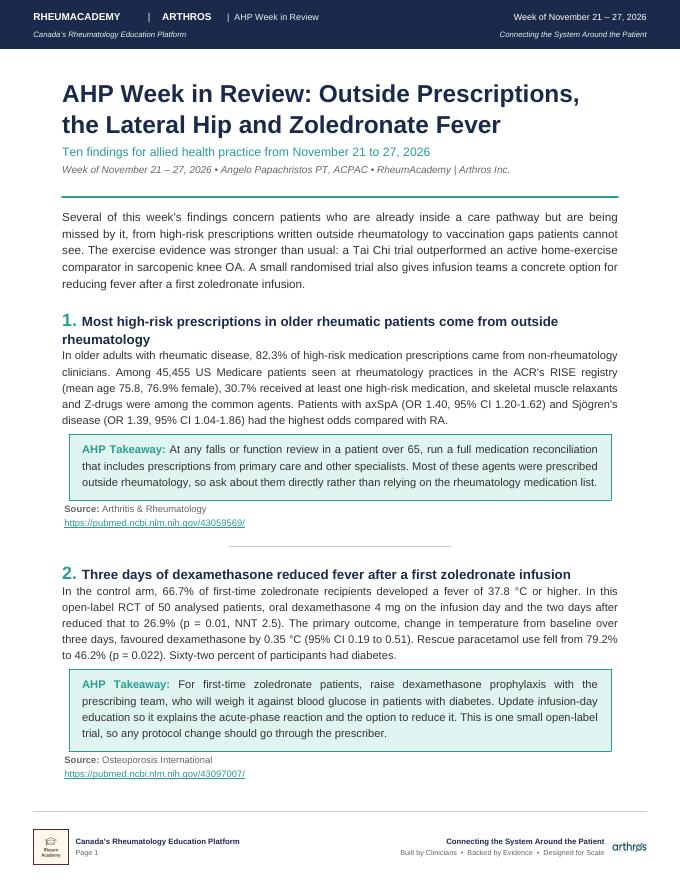
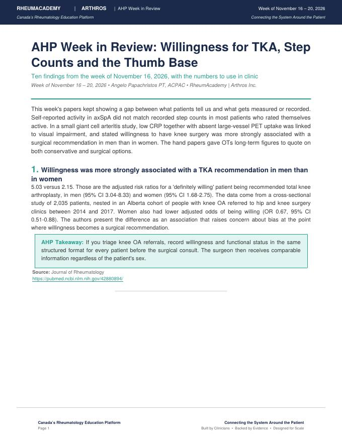

Briefs

November 27, 2026 · 10 papers
- Most high-risk prescriptions in older rheumatic patients come from outside rheumatology
- Three days of dexamethasone reduced fever after a first zoledronate infusion
- One in three hips awaiting replacement also has greater trochanteric pain syndrome
- Nearly half of axSpA patients score in the central sensitisation range
- Tai Chi beat education plus home exercise for mobility in sarcopenic knee OA
- Knee OA was linked to higher spine T-scores and twice the vertebral fractures
- Hand symptoms are common in older adults, and few are referred to allied health
- Immunosuppressed patients overestimate their vaccination coverage
- Wearable data did not improve on weekly ePROs for RA disease activity
- Desk work demands more elbow extension and pronation than classic targets
Read the preview
Get the full brief by email

November 20, 2026 · 10 papers
- Willingness was more strongly associated with a TKA recommendation in men than in women
- Nearly one in five dermatomyositis patients had peripheral neuropathy
- Cochrane: turmeric may give little to no improvement in knee OA pain or function
- About four in ten women with rheumatic disease in a Japanese survey had never been counselled on contraception
- Self-reported activity in axSpA often did not match recorded step counts
- 84% of patients with thumb CMC instability had not had surgery after exercise-based care
- Fewer than one in ten women started osteoporosis treatment within two years of a fracture
- In GCA, low CRP with absent large-vessel PET uptake was linked to visual impairment
- Swanson MCP arthroplasty in RA relieved pain but did not improve grip or pinch
- Persistently tender, non-swollen RA joints were associated with Doppler signal and erosion
Read the preview
Get the full brief by email